O que é Gestalt e para que serve
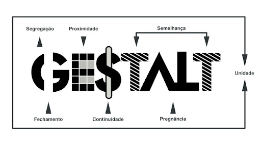Gestalt
A Gestalt ou Teoria da Forma é uma corrente de pensamento que propõe que a simples união das partes não explica o todo. Conforme um de seus principais autores, Max Wertheimer, a percepção humana é estruturada e organizada e, por isso, não deve ser reduzida a elementos menores.
Assim, “Gestalt” é uma palavra alemã que não possui uma tradução direta na língua portuguesa. Entretanto, é possível extrair alguns significados aproximados, como: forma, padrão, configuração ou totalidade.
Uma das áreas atuais em que a Gestalt tem tido grande sucesso de aplicação é a do Design. Afinal, se o objetivo dessa especialidade é em construir uma forma, a teoria gestaltista ajuda a entender como ela será recebida pelo público.
Logo, seja para campanhas publicitárias, divulgação ou ilustração, o Design pode se basear nessas ideias para construir imagens que atingirão melhor o seu objetivo. Além disso, a Gestalt é utilizada também em outros campos, como a da psicologia clínica.
Leis da Gestalt
A corrente teórica gestaltista formulou pelo menos 8 leis ou princípios básicos que explicam como a percepção humana funciona e se organiza. A partir delas, diversos estudos psicológicos já foram realizados.
Lei da Proximidade
Nosso cérebro tende a agrupar formas que estão próximas. Isto pode acontecer para formar o conceito do todo (quando várias partes formam um só elemento visual, que eu expliquei aqui) ou para formar grupos de uma composição visual.
Vamos usar a imagem do teclado como exemplo.
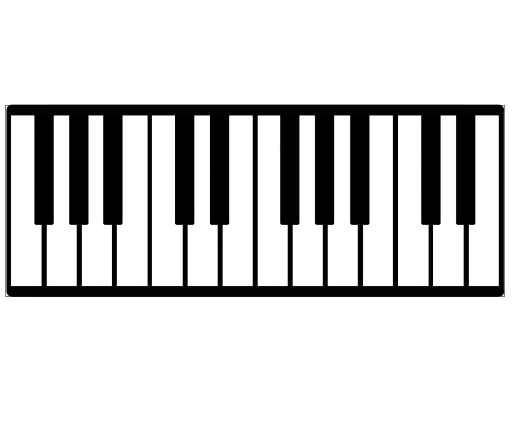A proximidade de todas as formas constrói uma composição visual: o teclado.
A proximidade das teclas pretas forma grupos de duas teclas e de três teclas.
O agrupamento da forma é comumente constituído por sua semelhança. Formas semelhantes tendem formar uma proximidade visual muito maior que formas não semelhantes. No exemplo acima, além da proximidade, a semelhança de cor e forma das teclas faz com que eu tenha uma noção melhor de proximidade.
Portanto, o agrupamento de formas pode criar grupos e subgrupos visuais que irão fazer parte de uma composição visual.
Lei da Continuidade
A Continuidade é a Lei da Gestalt a respeito da fluidez de uma composição. Se os elementos de uma composição conseguem ter uma harmonia do início ao fim, sem interrupções, podemos dizer que ele possui uma boa continuidade. Esta harmonia pode ser feita através de formas, cores, texturas, etc. Por exemplo: uma paleta de cores que começa no tom mais escuro e termina com o tom mais claro.
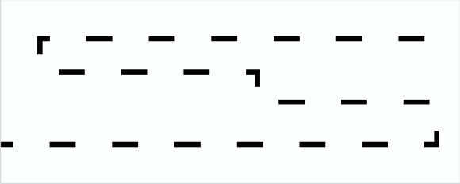A continuidade é importante para que o cérebro decifrar melhor o código visual de uma composição. Ou seja, facilitar a compreensão e a comunicação de uma peça gráfica, por exemplo. Em uma linha contínua de pontos, nosso cérebro reconhece aquela continuidade como uma linha. Assim ele não precisa decifrar cada forma (que seriam os pontos).
Lei da Semelhança
Na lei da semelhança, os objetos parecidos são percebidos juntos. Na ilustração acima, é provável que você veja duas linhas horizontais de círculos e uma de quadrados, no centro. Desse modo, ela não é enxergada como um conjunto de linhas verticais com círculos e quadrados intercalados.

Lei da Pregnância
Lei da Pregnância. Essa lei (também conhecida como “boa forma”) nada mais é do que o princípio básico da percepção visual da Gestalt. Sempre enxergamos a composição visual geral como um todo antes de nos aprofundarmos nos seus elementos mais complexos.
Lei da Unidade
Embora na ilustração acima não existam linhas que desenhem um urso panda inteiramente, identificamos perfeitamente o animal, referente ao logo da WWF. Ou seja, a percepção humana tende a unificar o objeto, o que permite também a compreensão de imagens abstratas.
Lei do Fechamento
O fechamento estabelece que o nosso cérebro tem a inclinação de fechar ou concluir formas que vemos inacabadas ou abertas. Isso se deve a padrões sensoriais e de ordem espacial que temos em nossa mente.
Ou seja, ao se guiar pela continuidade de uma forma, prevemos toda a sua estrutura. Um exercício que fazíamos de fechamento quando crianças é o famoso “ligue os pontos”. Antes de terminar o desenho já imaginávamos o resultado do fechamento das linhas.
Tenha cuidado ao utilizar esta lei na criação de peças, para não gerar duplo sentido. Nem todos possuem o mesmo entendimento em relação a uma composição visual. Nós possuímos experiências diferentes quanto à percepção de objetos. Se você nunca teve contato visual com um elemento, certamente sua mente vai projetar a forma de outro item semelhante.
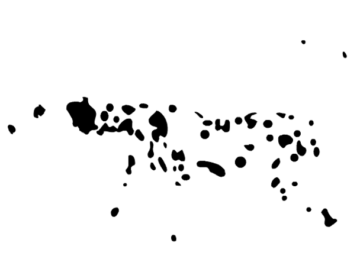Lei da Segregação
A terceira lei dos princípios da Gestalt dita que nosso cérebro tem a capacidade de diferenciar ou evidenciar objetos, ainda que sobrepostos. Isso se deve à variação de forma e estética que um elemento tem em comparação com outro. Desse modo, os estímulos visuais de cada unidade também são diferentes. A segregação ocorre de várias maneiras: pontos, linhas, planos, volumes, sombras, brilhos, texturas, relevos, entre outras formas.
No campo do design é sempre bom estar atento aos contrastes de elementos. O contraste permite uma melhor leitura visual e entendimento do fluxo da mensagem pelo público. A segregação ainda trabalha na questão da hierarquia de importância dos objetos. É possível dar maior peso a uma parte da mensagem em relação à outra.
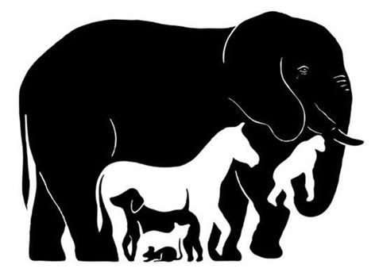Exemplos
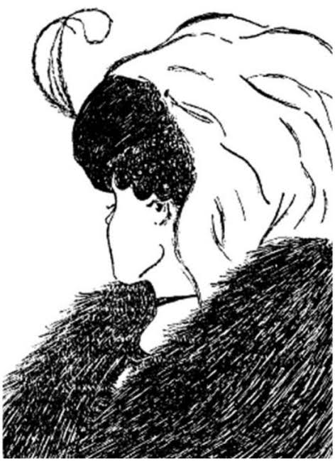 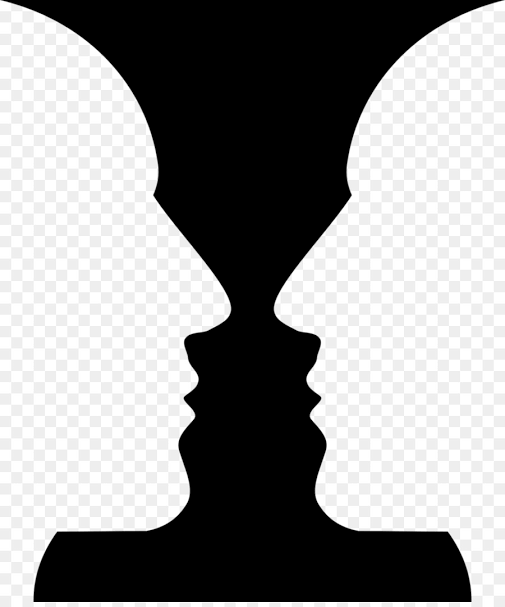 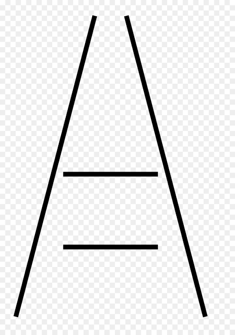 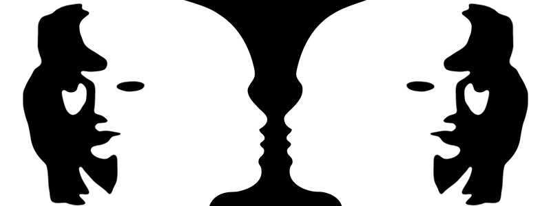 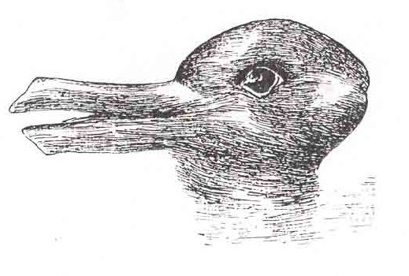 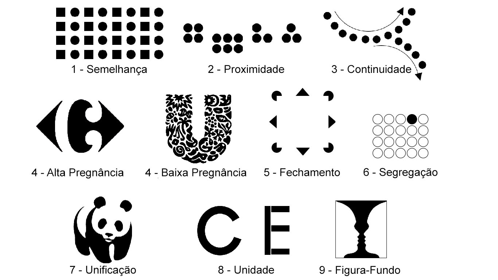{kind=link}
{kind=link}
{kind=link}
{kind=link}
{kind=link}
{kind=link}
© 2021 - Tudo Sobre Gestalt - Desenvolvido por Hugo mark